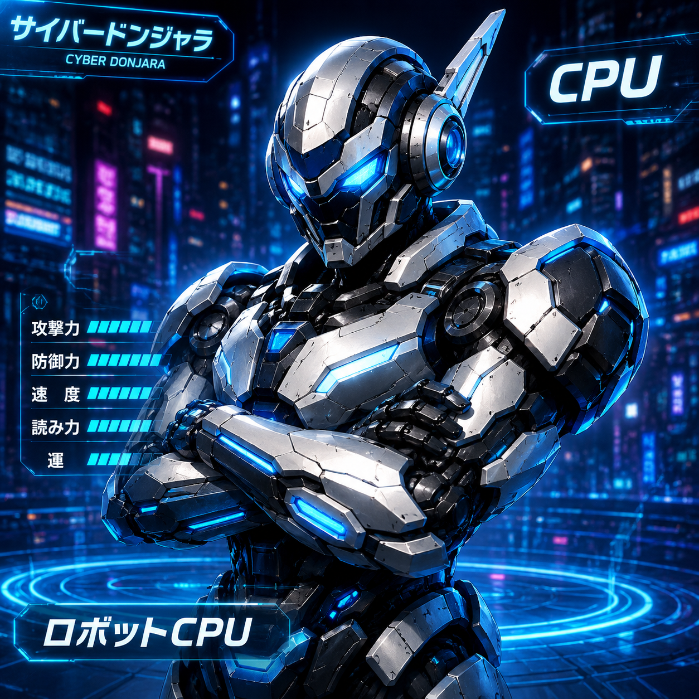
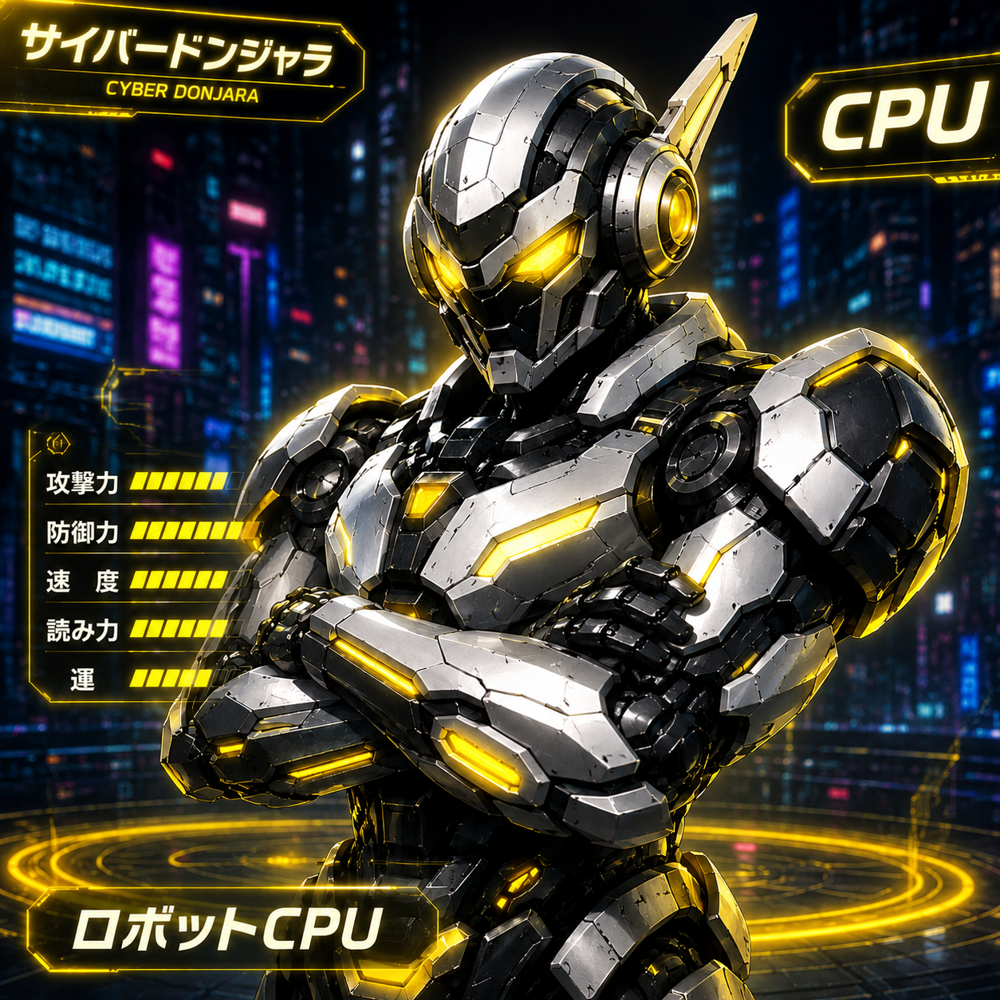
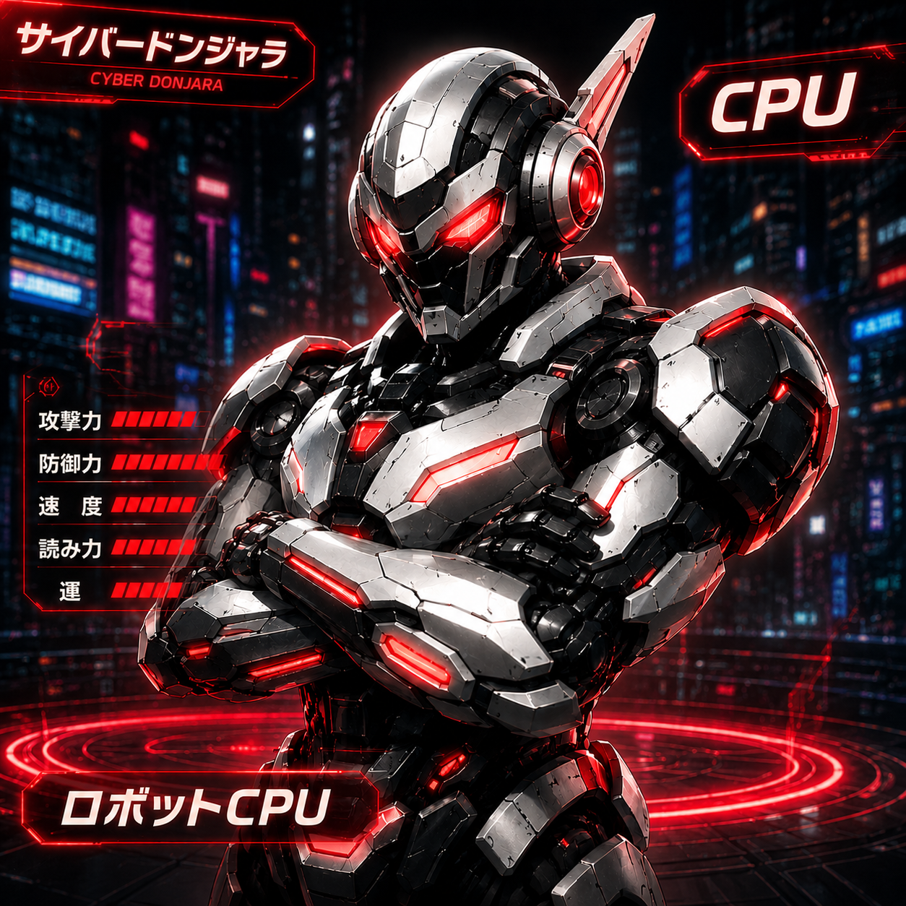

NEON MULTIPLAYER BOARD GAME
CYBER DONJARA
PLAYER PROFILE

ネオ・プレイヤー
sicoX 手持ちポイント
読込中...
サイバードンジャラ ルール
基本ルール
- ◆ 手牌は全部で9枚。3枚のセットを3グループ作ればアガリ（勝利）です。
- ◆ 自分の番になったら山から1枚引き、いらないパイを1枚捨てます。
- ◆ 原則、まったく同じ種類のパイを3枚集めることで1セットになります。
- ◆ あと1枚で完成のとき、自分で引く（ツモ）か、他人の捨て牌を貰う（ロン）とゲーム終了です。
- ◆ テンパイ（あと1枚で完成の状態）になるとリーチを宣言できます（1,000点支払い、成立時+1,000点）。
- ◆ 親（最初の手番）がアガると獲得点数が1.5倍になります。
- ◆ 山牌がなくなると流局（引き分け）となり、誰も得点を得られません。
アガリ役一覧（②④特殊役）
※役が複数の条件を満たす場合は、最も点数の高い役が自動的に採用されます。
MATCHMAKING LOBBY
対戦プレイヤーを検索中...
あなた
HOST READY
VS

SEARCHING
CONNECTING...

SEARCHING
CONNECTING...

SEARCHING
CONNECTING...
03:00
あなたは最初の入室者（親）です。
全員の準備が整うか、3分経過すると強制的にゲームがスタートします。
セッションを接続中...
東1局
3ゲーム・1セット
残り山牌:
81
親
REACH
CPU 1
20,000
親
REACH
CPU 2
20,000
親
REACH
CPU 3
20,000
P1 川
P2 川
P3 川
あなた 川
役: 同種3枚×3組
タップで選択→再タップで捨て牌
牌が捨てられました
タイムアウトまで: 3.0s
親
REACH
あなた
20,000
CHAT
システム: チャットルームへ接続中...
ROUND CLEARED
Winning Hand
アガリ役
通常アガリ
基本点数
+4,000 pts
獲得チップ支払い元
放銃者: CPU 1
SET COMPLETE
FINAL RESULTS
3ゲームセット全順位と獲得チップの最終評価
CPU 1
21,000
2nd
あなた
26,000
1st
CPU 2
17,000
3rd
CPU 3
16,000
4th